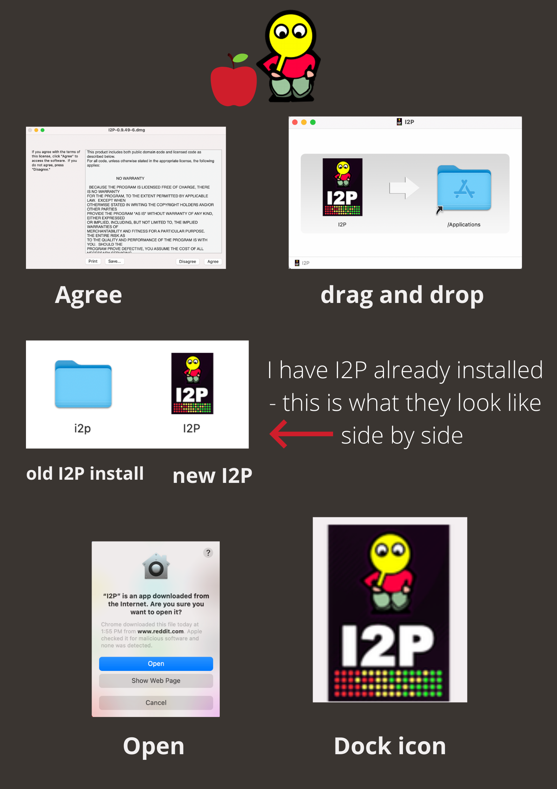

 Here are some screenshots that should help you install the I2P .dmg package.
The .dmg package behaves just like Mac applications normally do, where they "Slide" into place in the application directory.
First, like with most software, you'll be presented with a License agreement. This simply states that our software is Free and Open Source, and that you may Use, Study, Modify, and Share it.
Now that all the I2P software can be bundled into a single package for Mac users, it's possible to share the .dmg as a way of spreading I2P.
Next, you'll need slide the I2P "Dock Icon" into your "Applications Directory." This will begin installing the I2P application image.
If you already have an I2P router installed using the .jar file created by IzPack, you will see two I2P routers in your Applications Directory.
This is usable, but you should only run one router at a time. They will both use the same Application Directory.
When you do this, Mac OSX will present you with information about the person who notarized the installer, and prove the I2P router was not tampered with.
You'll be able to tell I2P is running when an I2P Icon appears in your Dock.